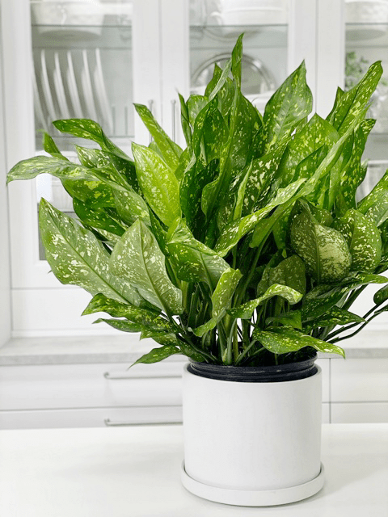
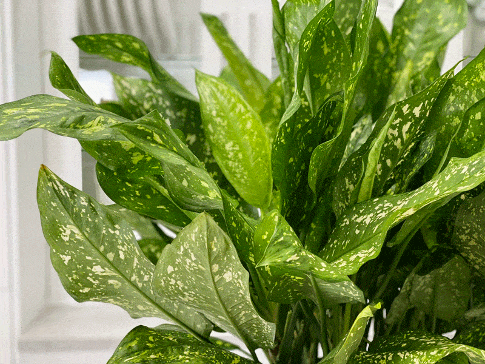

Chinese Evergreen | Emerald Star Plant | Care Difficulty – Easy

The Chinese evergreen plant is one of the most durable houseplants you can grow, tolerating poor light, dry air, and drought. There are many varieties, including variegated forms.
To be honest, it took some intense investigation to figure out what variety I have. I am pretty sure that it is the Emerald Star. The beauty of Chinese evergreens is that they all require the same basic care, so I am not going to worry too much about the technical name.
Light Requirements
Chinese evergreen plants are probably the only indoor plant with large, colorful, variegated leaves that can live in low-light conditions. If placed in medium light, these plants grow more quickly.
The plant in the photo is in my living room, which has large north-facing windows. It seems to be thriving perfectly. New leaves continue to unfurl.
Water Requirements
If you place your plant in high light, you can allow the potting mix to dry down 1/2 to 3/4 of the way out before watering thoroughly. In a lower-light situation, allow the soil to dry almost completely between waterings. Overwatering will lead to root rot.
Temperature Requirements
Temperatures below 50 degrees (F) may damage the leaves; keep a Chinese evergreen plant away from cold winter drafts and air conditioners, which can cause browning of the foliage. Our house averages 68 degrees (F) and the plant stays very happy.
Fertilizer – Plant Food
Chinese evergreen plants need very little plant food. Feed every other month with a balanced plant food diluted to 1/4 the recommended strength.

Plant Characteristics to Watch For
Diagnosing what is going wrong with your plant is going to take a little detective work, but even more patience! First of all, don’t panic and don’t throw out a plant prematurely. Take a few deep breaths and work down the list of possible issues. Below, I am going to share some typical symptoms that can arise. When I start to spot troubling signs on a plant, I take the plant into a room with good lighting, pull out my magnifiers, and begin by thoroughly inspecting the plant.
My plant is turning yellow.
- Most often, yellowing occurs due to over or under-watering. If you’re noticing yellow leaves, along with some brown crispy spots on additional leaves, then it could be underwatering. If watering is spot on, the plant may be suffering from a copper deficiency. This is surprisingly common in this type of plant, as it’s a heavy feeder on copper in the soil.
- Solution: Check in with the soil to determine if it matches your diagnosis. If watering isn’t an issue, your plant may be lacking micronutrients and should be fertilized appropriately.
The stems are mushy!
- Mushy stems are a sign of overwatering.
- Solution: Allow the plant to dry out, then saturate the soil until the water drains from the drain holes. Continue to monitor the watering schedule to avoid overwatering.
My plant is showing signs of bacterial disease (leaf spot).
- With the Chinese evergreen, leaf spot is a sign of high humidity.
- Solution: Move the plant to a location with less humidity.
My plant is getting too big and/or leggy for my home.
- In the right conditions, this plant will grow quite large.
- Solution: Prune it back! These guys are very hardy and can handle a good trim.
I want my plant to be more lush and full.
- Solution: Remove some of the new leaves as they appear. Firmly grasp the stem where there is new leaf growth. Hold the new leaf near its base and gently pull. It should come out entirely, and this is preferred. Do not use scissors. Leaves and stems should be removed completely, with no “stump” left behind. Wounds on a plant allow for the entry of disease and can attract insects.
The leaves are turning brown and curling at the tips.
- Browning tips on green leaves are usually caused by a buildup in the soil of salts, chlorine, minerals, or fluoride from tap water.
- Solution: To remedy this, you can either leach the soil of its mineral deposits by thoroughly draining it using distilled water, or you can simply repot in fresh soil.
Additional Care
- Remove any dead, discolored, damaged, or diseased leaves and stems as they occur.
- Wipe leaves with a damp cloth to keep them free of pests and dust. Never use a feather duster to clean plants, because dusters can easily transfer tiny insects or eggs from one plant to another.
Common Bugs to Watch For
If you want to have healthy houseplants, you MUST inspect them regularly. Every time I water a plant, I give it a quick look-over. Bugs/insects feeding on your plants reduces the plant sap and redirects nutrients from leaves. Some chew on the leaves, leaving holes in the leaves. Also watch for wilting, yellowing, distorted, or speckled leaves. They can quickly get out of hand and spread to your other plants.
IF you see ONE bug, trust me, there are more. So, take action right away. Some are brave enough to show their “faces” by hanging out on stems in plain sight. Others tend to hide out in the darnedest of places. Below are some mealybugs that I captured hanging out on some other plants.
-

-
Mealybugs.
-

-
The plant is a pothos, but mealybugs can attack other plants.
- Mealybugs look like small balls of cotton. They can travel, slooooooowly, but they have a strong will and determination! Though they are slow-moving, if any plant is touching another, there is a chance the mealybug will hitch a ride on a new leaf and spread. They breed like rabbits of the insect world. Females can deposit around 600 eggs in loose cottony masses, often on the underside of leaves or along stems.
- Aphids are more commonly seen if you place your plants outdoors. Aphids are indeed bugs. They are tiny insects that, along with black, also come in shades of yellow, green, brown, and pink. They are often found on the undersides of leaves.
- Spider mites are more common on houseplants. They are not insects – they are related to spiders. These appear to be tiny black or red moving dots. Spider mites are nearly invisible to the naked eye. You often need a magnifying lens to spot them, or you may just notice a reddish film across the bottom of the leaves, some webbing, or even some leaf damage, which usually results in reddish-brown spots on the leaf.
Toxicity
Chinese evergreen plants are poisonous, with a #2 toxicity level because of the calcium oxalate crystals in the plant. Adverse reactions include skin irritations after contact with the sap, irritation of mouth, lips, throat, and tongue if leaves are eaten.
© AmieSue.com